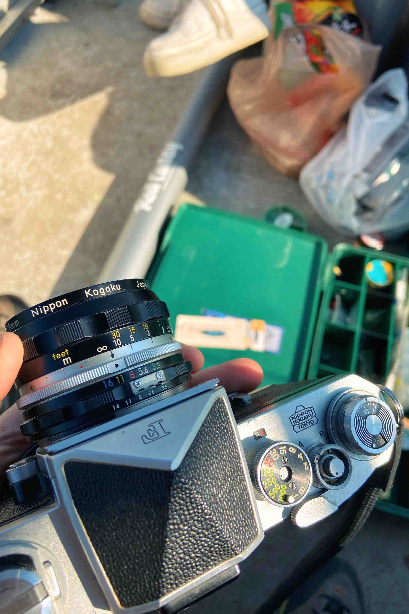

FISHING IN CEDAR CITY AND THE CAMERA THAT I WAITED A YEAR TO BUY
FEBRUARY 1 2024
This post will mostly be about the photos but I thought it would be a fun detail to include that I waited a year until I could buy this camera. The camera that I used for these was a silver Nikon F with an eye level finder and I waited a year to get it because the seller was in Cedar City, Utah and I didn't have a reason to drive all the way down there (4ish hours) until I went on a fishing trip with my girlfriend and her family.

And here is a picture of the camera on the trip! I was pretty stoked about this purchase because I had been waiting forever to buy it and I LOVE how the Nikon F with the eye level finder looks. It looks like such a classic camera.. like an analog camera can't get anymore classic right!

The craziest thing was that I messaged the seller on Facebook almost an entire year before he sold me the camera. Somehow it stayed available the entire time and I was able to come pick it up while I was in town for the fishing trip. Doubling up on errands is my middle name :) :).

Thats enough about the camera though. Lets talk about the trip itself and some of the photos.
Like I said before it was a fishing trip to Cedar City. The actual lake we went to was called Panguitch Lake and it was outside of Panguitch if you can believe it, but we stayed in Cedar City and that's were we met up with my girlfriends family. While we were staying there I was able to duck out and pick up the camera.
I brought a roll of expired Portra 400 with me since I anticipated that I would buy the camera and that's what I shot during the trip.. I placed a lot of trust on the seller saying that the camera worked, otherwise I would have been empty handed :( never a good thing when you're the psuedo designated photographer.
Luckily the camera worked fine and I was able to take some pictures that I was really stoked about!


The trip was pretty short, just a weekend since I had to be back in Salt Lake City for work on Monday, but I was able to get a handful of photos on the lake as well as on the way back through central Utah.


The camera was awesome but one thing I should mention was that the expired film combined with the vintage non-ai lens lead to some "softer" and more "stylistic" photos. Stylistic meaning crushed shadow detail and slightly un-realistic colors. But if you know me I am a big fan of expired film so I was happy with the results regardless.

And if you're a fan of expired film too than you're in the right place because I plan on sharing a lot more expired rolls later! So yeah, that's pretty much it for this one. Thanks for reading and I'll see you on the next one!